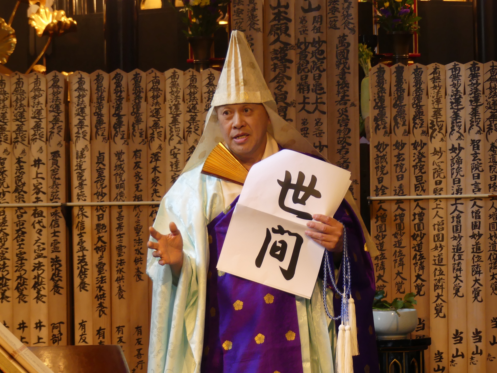

One of the major schools of Japanese Buddhism, founded in the 13th century by Nichiren Shōnin. Its practice centres on the Lotus Sūtra and the mantra Namu Myōhō Renge Kyō.
Nichiren Shu Buddhism is both a deep, spiritual practice and a way of living.
One can spend a lifetime exploring the depths and nuances of the tradition.
However, it’s also an immediate practice that powerfully engages each individual right from the start and gives each person a sense of connection to a wider community and a new way of thinking about life itself.
Our Founder, Nichiren Shonin, developed a practice that centers on the teachings of the Lotus Sutra
and makes it possible for people to connect with its teachings and get on a path to revealing their true Buddha nature.
Through prayer, memorials, exhibitions, and public activities, Myohokkein continues to carry its message of peace.
Several monuments throughout the temple grounds reflect this ongoing prayer for peace.
The temple is led today by Rev. Shimma Chikō, who inherited the Dharma Lamp in 2011 as the fifth-generation abbot.

After the 1995 earthquake, Rev. Shimma spent half a year at Mt. Minobu re-studying the Lotus Sūtra and the founder's writings from the beginning. He later served as a local fire-brigade volunteer, edited an earthquake-memorial volume, ran the regional Nichiren-shū newspaper bureau, and worked in the denomination's Kinki-region administration before assuming the abbacy here in 2011.
Myohokkein sits 1 minute walk from Shinkaichi Station, A 20 minutes by train from Shin-Kobe station.
Through YouTube and Instagram, we share moments from daily temple life and Buddhist observances at Myohokkein.